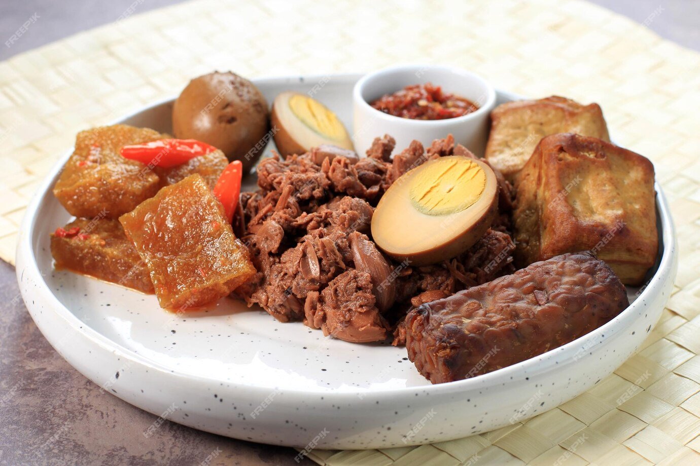

Gudeg
Gudeg is a traditional Javanese dish from Indonesia, originating from Yogyakarta. It's often referred to as "Jogja's signature dish." Gudeg is known for its sweet and savory flavor, with a unique taste that's loved by many.
Ingredients
- Garlic
- Shallots
- Coriander
- Candlenuts
- Galangal
- Bay leaves (daun salam)
- Teak leaves (daun jati) for its reddish-brown color
Health Benefits
- Rich in Fiber: Young jackfruit, the main ingredient, is high in dietary fiber, which aids digestion and promotes gut health.
- Low in Fat (Base Dish): The base gudeg (young jackfruit cooked in spices) is naturally low in fat, especially if minimal coconut milk is used. Tempeh and Tofu add plant-based protein and nutrients like calcium and iron.
How to Make Gudeg Healthier
- Reduce Sugar: Use less palm sugar or substitute with a natural sweetener like stevia.
- Limit Coconut Milk: Opt for light coconut milk or use less of it during cooking.
- Balance the Meal: Pair gudeg with lean proteins like boiled chicken or eggs.
- Control Portion Size: Enjoy smaller portions of the richer accompaniments like krecek to reduce sodium and fat intake.